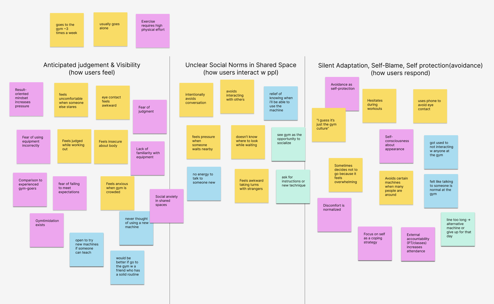
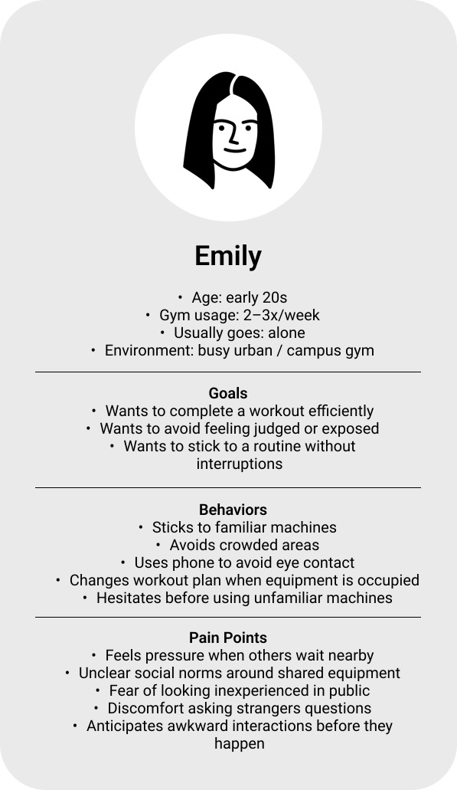
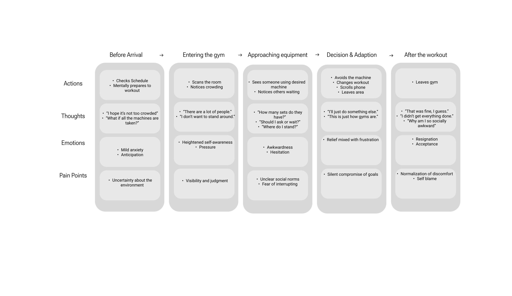
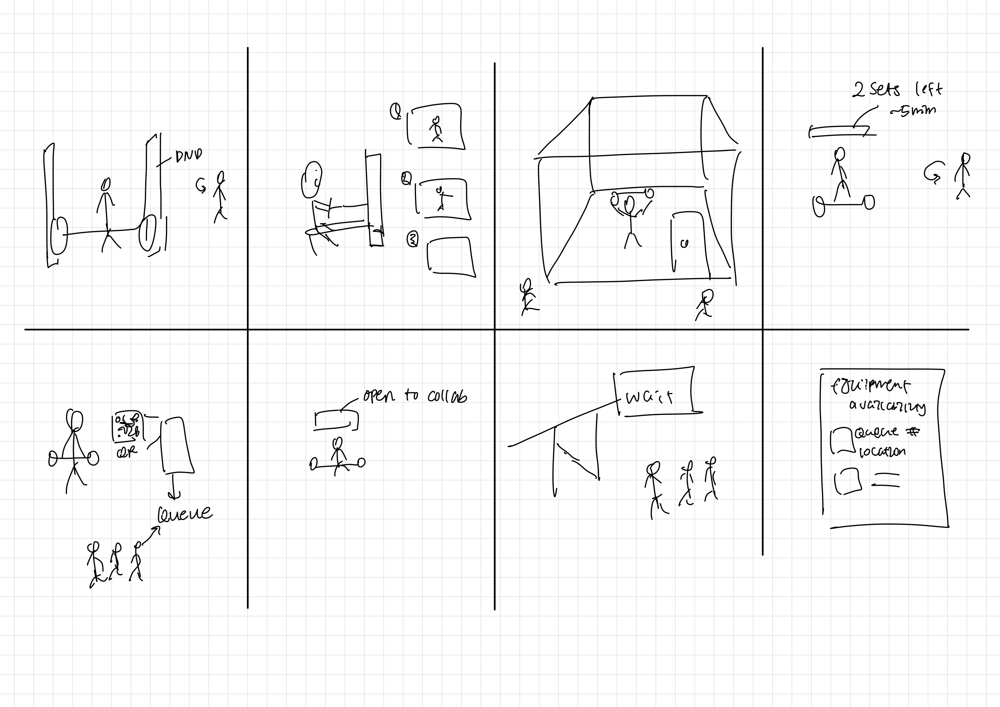
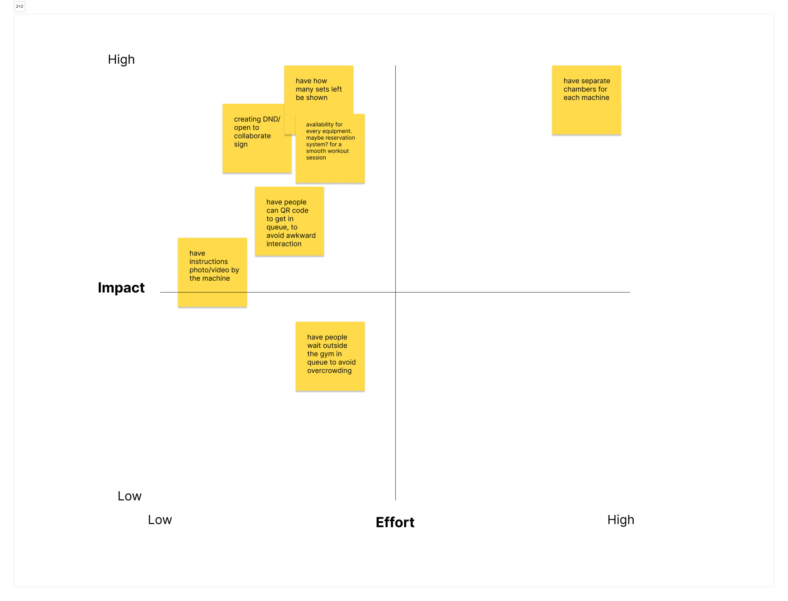
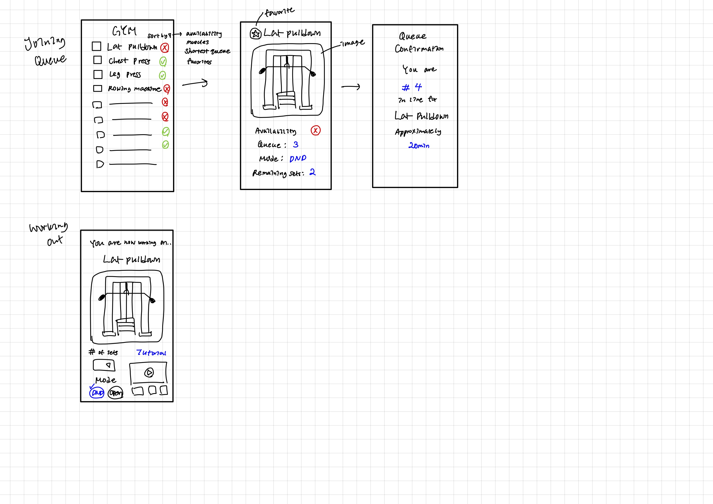
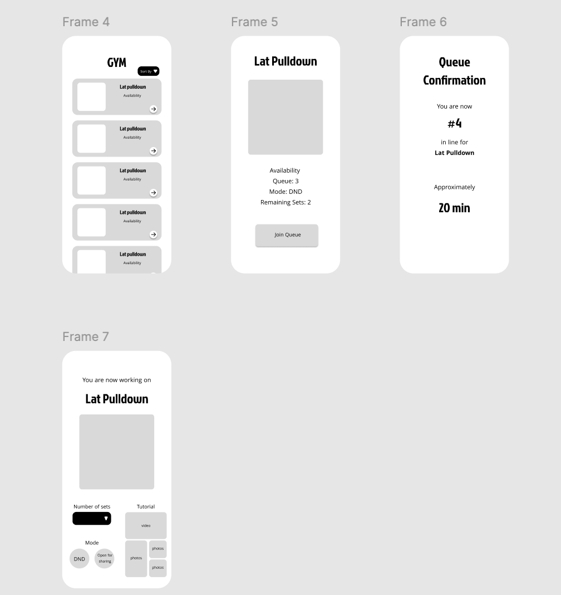

One prompt, one week, one gym
The challenge was open-ended: revitalize third places in urban areas — cafes, libraries, parks. Rather than picking an obvious space, I asked myself which third places I personally hesitate to visit. The answer was the gym.
Through early personal observations and conversations, I realized gym avoidance wasn't just my problem. People trying to get fit in urban areas were running into the same invisible wall — not a physical barrier, but a social one.
Skipping machines, blaming themselves
The gym is supposed to be a third place, but for a lot of people it's a space they quietly manage instead of enjoy. The barrier isn't physical. It's social: not knowing who's next, how many sets are left, or whether it's okay to ask.
So people adapt in silence:
- Sticking to familiar "safe" machines instead of the ones they planned to use
- Scrolling their phone to avoid eye contact while waiting
- Leaving when everything looks occupied
- Blaming themselves: "I'm just too self-conscious"
I started with a narrow question about awkwardness. Research showed the real issue was agency: people don't hate interaction, they hate not controlling when and how it happens.
Initial: How might we reduce awkward interactions in gyms so people feel more comfortable working out?
→ Refined: How might we make gym interactions more predictable and opt-in, so people with different social comfort levels can all participate comfortably?
Join the line without saying a word
The app makes the gym's unspoken rules visible: what's free, who's next, and who's open to talking. Everything a person used to negotiate out loud becomes something they can check quietly.
Know before you walk up
See which machines are free, join a queue with one tap, and signal whether you're open to talking. No hovering, no asking how many sets are left.
Why replace a simple question with a button? Interviews showed people won't ask "how many sets?" even when it's completely normal. A queue makes waiting legitimate without a conversation. Trade-off: fewer chance conversations, which is why the Open to Collaborate toggle exists for people who want them.
Two kinds of gym-goers, two different walls
I intentionally avoided locking into my early assumption ("awkward gym interactions") to reduce confirmation bias. I used a mixed-method approach with a small sample, appropriate for the 1-week timeline.
I deliberately recruited both socially awkward and socially confident participants to avoid over-indexing on anxiety as the sole factor. This revealed something important: the two groups had very different blockers.
Discomfort is a pile of small moments
I chose affinity mapping because gym discomfort isn't a single pain point — it's a collection of small emotional experiences. I listed each experience as an atomic note, grouped by emotion type, then labeled the theme only after grouping.
Three clusters emerged:
- Anticipated judgment & visibility — how users feel just being present, even without direct interaction
- Unclear social norms in shared space — the cognitive load of not knowing when or how to interact with strangers
- Silent adaptation & self-protection — how users respond: avoiding machines, scrolling phones, shrinking routines to "safe" equipment

Anxiety starts before the door
Meet Emily, the in-between gym-goer. The persona Emily was synthesized from interview patterns — not a single individual. I defined her as an early-20s gym-goer who attends 2–3x/week and usually goes alone, because this profile consistently appeared across participants and best captured the tension between motivation and avoidance.
She's not a beginner, but not fully confident — an "in-between" state where she knows the gym but still experiences anxiety around visibility, judgment, and unclear social norms. Her behaviors (sticking to familiar machines, using phone to avoid eye contact) are adaptive strategies, not personal shortcomings.


The journey map revealed that anxiety starts before users physically enter the space. The "Decision & Adaptation" stage is the most critical — this is where users silently compromise their original plans. Avoidance is not a satisfying outcome; it's a coping mechanism. And afterward, they normalize it: "This is just how gyms are."
What did I find?
Judged just for being there
↻ HoverTap to reveal
The rules are the hard part
↻ HoverTap to reveal
Avoidance gets called gym culture
↻ HoverTap to reveal
Eight ideas in eight minutes
I used Crazy 8s to rapidly generate ideas across digital, physical, and environmental dimensions — avoiding solution fixation by prioritizing quantity first. Then I used an Impact–Effort matrix to converge on the most viable concepts.


Ideas that landed in the high-impact, low-effort quadrant were prioritized because they reduce social friction without forcing interaction, align with observed behaviors, and can be implemented without redesigning the gym:
- Displaying sets remaining / machine availability — reduces uncertainty and hovering
- QR-based queue — wait without verbal negotiation
- Instructional photos/videos on machines — learn without public embarrassment
- DND / Open-to-collaborate toggle — make intent visible, prevent unwanted interruptions
Fewer decisions at the machine
The low-fidelity prototype established the core linear flow: equipment list → machine detail → join queue → workout. I intentionally kept the flow simple to reduce hesitation at decision points — the journey map showed most drop-offs happen between "approaching equipment" and "deciding what to do next."

Waiting wasn't the problem. Not knowing was.
I ran moderated usability testing with 2 participants who regularly go to the gym alone. Testing goal: evaluate whether the core interaction flow reduced social discomfort and decision hesitation — not to validate visual design.

Key observations from testing:
- Queue confirmation reduced anxiety immediately — uncertainty, not waiting, was the main stressor
- Remaining sets and DND mode were interpreted correctly without explanation
- "Join Queue" felt more comfortable than asking verbally how many sets remained
- Tutorial placement felt reassuring, but only after users felt socially safe first
Pain points identified: users hesitated before tapping "Join Queue" and wanted clearer feedback on what happens after joining. I refined these in the hi-fi iteration.
The final design
The high-fidelity prototype brought the system together — real-time availability, queue management, social signaling, and in-context tutorials — all in a single coherent flow.

Addresses anxiety before approaching. Users mentally prepare for discomfort before entering — surfacing availability early lets them plan without physical exposure.

When the equipment is free, the detail screen says so and the only action is to start. You know you can walk up without negotiating with whoever might be nearby.
Makes progress visible and predictable for people waiting — directly reduces the pressure of standing nearby.
Replaces verbal interaction. Interviews showed users hesitate to ask "how many sets?" even when it's socially acceptable — fear of disrupting or being judged.
Ambiguity, not waiting, is the stressor. Showing position + time estimate replaces uncertainty with reassurance.
Externalizes social intent. Both user types benefit — awkward users avoid unwanted interruptions; confident users signal openness to interaction.
Lack of confidence, not lack of interest, stops users from trying new equipment. Low-pressure in-context tutorials remove that barrier.
The gym starts before you arrive
Through additional user testing, I realized many users want to avoid awkward gym interactions before they even arrive — not just while using equipment. One tester wished the system showed which days and times are typically crowded, so they could plan around low-traffic periods.
This revealed a gap in my original solution: while the design reduced discomfort inside the gym, it didn't sufficiently support decision-making before entering the space.
Key reframe: Revitalization isn't about managing awkward moments — it's about empowering users with predictability and control. Social anxiety in third spaces often begins in anticipation, not in the moment of interaction.
If I were to iterate further, I'd extend the experience to include historical crowd data and peak-time indicators — letting users choose when to go rather than react once they arrive. This project reinforced that human-centered design must address both emotional preparation and real-time interaction.